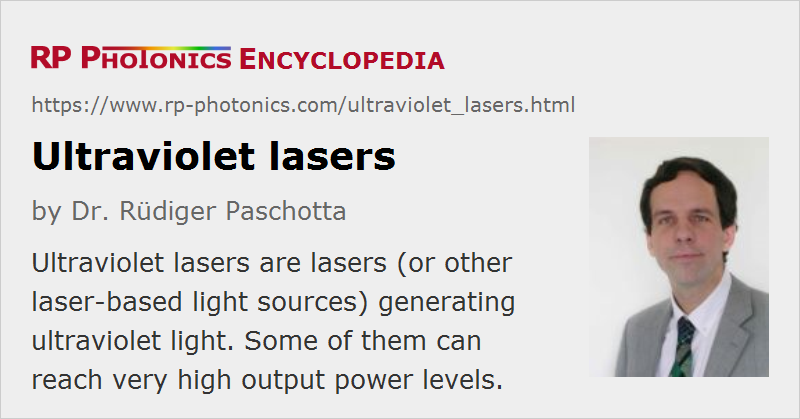

Ultraviolet Lasers
Definition: lasers (or other laser-based light sources) generating ultraviolet light
More general terms: lasers
German: ultraviolette Laser
How to cite the article; suggest additional literature
Author: Dr. Rüdiger Paschotta
The technology of lasers for the generation of ultraviolet light involves a number of challenges:
- For short wavelengths, strong spontaneous emission leads to a high threshold pump power (except when the gain bandwidth is narrow).
- For wavelengths below ≈ 200 nm, the choice of transparent and UV-resistant optical materials is fairly limited (see the article on ultraviolet light).
- Even weak surface roughness or bubble content of optical components can lead to strong wavefront distortions and scattering losses.
Nevertheless, there are various kinds of lasers which can directly generate ultraviolet light:
- There are laser diodes, normally based on gallium nitride (GaN), emitting in the near-ultraviolet region. The available power levels, however, are limited.
- Some solid-state bulk lasers, e.g. based on cerium-doped crystals such as Ce3+:LiCAF or Ce3+:LiLuF4, can emit ultraviolet light. Cerium lasers are in most cases pumped with nanosecond pulses from a frequency-quadrupled Q-switched laser, and thus emit nanosecond pulses themselves. With Q-switched microchip lasers, even sub-nanosecond pulse durations are possible. Mode-locked operation has also been demonstrated [13].
- Few fiber lasers can generate ultraviolet light [9]. For example, some neodymium-doped fluoride fibers can be used for lasers emitting around 380 nm, but only at low power levels.
- Although most dye lasers emit visible light, some laser dyes are suitable for ultraviolet emission.
- Excimer lasers are very powerful UV sources, also emitting nanosecond pulses, but with average output powers between a few watts and hundreds of watts. Typical wavelengths are between 157 nm (F2) and 351 nm (XeF).
- Argon ion lasers can continuously emit at wavelengths of 334 and 351 nm, even though with lower powers than on the usual 514-nm line. Some other ultraviolet lines are accessible with krypton ion lasers.
- There are also ion lasers emitting in the extreme ultraviolet spectral region. These can be based on, e.g., argon, but unlike in ordinary argon ion lasers one operates with Ar8+ ions, generated in a much hotter plasma. The emission then occurs at 46.9 nm. Such lasers can be pumped either with a capillary discharge or with an intense laser pulse.
- Nitrogen lasers are molecular gas lasers emitting in the ultraviolet. The strongest emission line is at 337.1 nm.
- Free electron lasers can emit ultraviolet light of essentially any wavelength, and with high average powers. However, they are very expensive and bulky sources, and are therefore not very widely used.
Apart from real ultraviolet lasers, there are ultraviolet laser sources based on a laser with a longer wavelength (in the visible or near-infrared spectral region) and one or several nonlinear crystals for nonlinear frequency conversion. Some examples:
- The wavelength of 355 nm can be generated by frequency tripling the output of a 1064-nm Nd:YAG or Nd:YVO4 laser.
- 266-nm light is obtained with two subsequent frequency doublers, which in effect quadruple the laser frequency.
- Diode lasers can be equipped with nonlinear frequency conversion stages to produce UV light. For example, one may use a continuous-wave near-infrared laser and apply resonant frequency doubling twice, arriving at wavelengths around 300 nm. A main attraction of this approach is that a wide range of wavelengths is accessible, with no limitations to certain laser lines.
Ultraviolet lasers need to be made with special ultraviolet optics, having a high optical quality and (particularly for pulsed lasers) a high resistance to UV light. In some cases, the lifetime of a UV laser is limited by the lifetime of the used optical elements such as laser mirrors.
For the extreme ultraviolet region, there are sources based on high harmonic generation. Such sources can reach wavelengths down to a few nanometers while still having a table-top format. The average output powers, however, are fairly low.
Applications
Ultraviolet lasers find various applications:
- Pulsed high-power ultraviolet lasers can be used for efficient cutting and drilling of small holes in a variety of materials, including materials which are transparent to visible light.
- Continuous-wave UV sources are required for micro-lithography, e.g. in the context of semiconductor chip manufacturing.
- Both continuous-wave and pulsed UV lasers are used for fabricating fiber Bragg gratings.
- Some methods of eye surgery, in particular refractive laser eye surgery of the cornea in the form of LASIK, require UV (sometimes even deep-UV) laser sources.
Ultraviolet laser sources involve some special safety hazards, mostly related to the risks of eye damage and causing skin cancer. The article on laser safety gives some details.
Suppliers
The RP Photonics Buyer's Guide contains 81 suppliers for ultraviolet lasers. Among them:
Questions and Comments from Users
Here you can submit questions and comments. As far as they get accepted by the author, they will appear above this paragraph together with the author’s answer. The author will decide on acceptance based on certain criteria. Essentially, the issue must be of sufficiently broad interest.
Please do not enter personal data here; we would otherwise delete it soon. (See also our privacy declaration.) If you wish to receive personal feedback or consultancy from the author, please contact him e.g. via e-mail.
By submitting the information, you give your consent to the potential publication of your inputs on our website according to our rules. (If you later retract your consent, we will delete those inputs.) As your inputs are first reviewed by the author, they may be published with some delay.
Bibliography
| [1] | H. Furumoto and H. Ceccon, “Ultraviolet organic liquid lasers”, IEEE J. Quantum Electron. 6 (5), 262 (1970), doi:10.1109/JQE.1970.1076451 |
| [2] | C. Rhodes, “Review of ultraviolet lasers”, IEEE J. Quantum Electron. 9 (6), 647 (1973), doi:10.1109/JQE.1973.1077652 |
| [3] | D. J. Ehrlich et al., “Optically pumped Ce:LaF3 laser at 286 nm”, Opt. Lett. 5 (8), 339 (1980), doi:10.1364/OL.5.000339 |
| [4] | R. W. Waynant and P. H. Klein, “Vacuum ultraviolet laser emission from Nd3+:LaF3”, Appl. Phys. Lett. 46, 14 (1985), doi:10.1063/1.95833 |
| [5] | Y. Taira, “High-power continuous-wave ultraviolet generation by frequency doubling of an argon laser”, Jpn. J. Appl. Phys. 31, L682 (1992), doi:10.1143/JJAP.31.L682 |
| [6] | S. C. Tidwell et al., “Efficient high-power UV generation by use of a resonant ring driven by a CW mode-locked IR laser”, Opt. Lett. 18 (18), 1517 (1993), doi:10.1364/OL.18.001517 |
| [7] | J. F. Pinto et al., “Tunable solid-state laser action in Ce3+:LiSrAlF6”, Electron. Lett. 30, 240 (1994), doi:10.1049/el:19940158 |
| [8] | S. M. Hooker and C. E. Webb, “Progress in vacuum ultraviolet lasers”, Prog. Quantum Electron. 18 (3), 227 (1994), doi:10.1016/0079-6727(94)90002-7 |
| [9] | D. S. Funk and J. G. Eden, “Glass-fiber lasers in the ultraviolet and visible”, J. Sel. Top. Quantum Electron. 1 (3), 784 (1995), doi:10.1109/2944.473660 |
| [10] | T. Kojima et al., “20-W ultraviolet-beam generation by fourth-harmonic generation of an all-solid-state laser”, Opt. Lett. 25 (1), 58 (2000), doi:10.1364/OL.25.000058 |
| [11] | C. Gohle et al., “A frequency comb in the extreme ultraviolet”, Nature 436, 234 (2005), doi:10.1038/nature03851 |
| [12] | H. Liu et al., “Broadly tunable ultraviolet miniature cerium-doped LiLuF lasers”, Opt. Express 16 (3), 2226 (2008), doi:10.1364/OE.16.002226 |
| [13] | E. Granados et al., “Mode-locked deep ultraviolet Ce:LiCAF laser”, Opt. Lett. 34 (11), 1660 (2009), doi:10.1364/OL.34.001660 |
| [14] | J. Rothhardt et al., “100 W average power femtosecond laser at 343 nm”, Opt. Lett. 41 (8), 1885 (2016), doi:10.1364/OL.41.001885 |
| [15] | U. Eismann et al., “Active and passive stabilization of a high-power UV frequency-doubled diode laser”, arXiv:1606.07670v1 (2016) |
See also: ultraviolet light, lasers, excimer lasers, free electron lasers, blue lasers, laser safety
and other articles in the category lasers
|  |
If you like this page, please share the link with your friends and colleagues, e.g. via social media:
These sharing buttons are implemented in a privacy-friendly way!